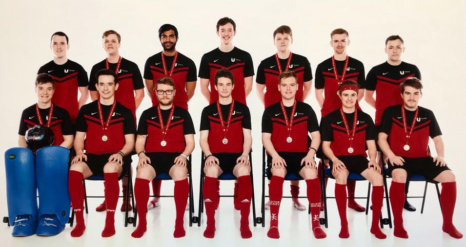

So you want to know some more about me as a person.
I'm a twenty-three year old guy currently living in Leeds, UK. I am also currently a memeber of John Lewis' technical support team.
I have a degree from Teesside university in Broadcast Media Production,
with the degree being media production I didn't just focus on TV and Film, I spent a
lot of time learning about radio, podcasting, advertising and various other forms of media.
I've got some more infomation which look into my background a bit more further down
so please go take a look. If there is more infomation you are
wanting to learn don't hesitate to send me an email, all the infomation about that can be found on the contact page.
Thank you for your time :)
so please go take a look. If there is more infomation you are
wanting to learn don't hesitate to send me an email, all the infomation about that can be found on the contact page.
Thank you for your time :)
So what do I do in my spare time?
Well I would say a majority of my time can be spent playing around
with technology.
I like to spend time building computers and playing around with editing software and similar programs, mainly premier pro and OBS.
Something I have found myself recently doing is doing livestreams on Twitch.TV, with OBS and steamlabs mixed together I am able to
play games and talk to people flawlessly.
I also like to be quite active in terms of sport, so during the current Covid-19 lockdown I have found myself performing various
HIIT work outs and I have started running despite my reservations about how much entertainment can be had from it.
On top of those I've actually started to learn how to code. I hope you might be able to recognise this from well this website, I've actually
built this thing from the ground up, feel free to have a look at the actual code if you are interested. Just don't expect anything ground-breaking.
If you want to have a look at it all. It's avaliable on Github. So just follow the link below
I like to spend time building computers and playing around with editing software and similar programs, mainly premier pro and OBS.
Something I have found myself recently doing is doing livestreams on Twitch.TV, with OBS and steamlabs mixed together I am able to
play games and talk to people flawlessly.
I also like to be quite active in terms of sport, so during the current Covid-19 lockdown I have found myself performing various
HIIT work outs and I have started running despite my reservations about how much entertainment can be had from it.
On top of those I've actually started to learn how to code. I hope you might be able to recognise this from well this website, I've actually
built this thing from the ground up, feel free to have a look at the actual code if you are interested. Just don't expect anything ground-breaking.
If you want to have a look at it all. It's avaliable on Github. So just follow the link below
Carrying on from my fore-mentioned interest in sports. My main sport is Field Hockey. I've been playing hockey for just about 15 years, I think.
I have spent a majority of my playing time at Leeds Hockey club. I have also played for my university eventually becoming chairman and helping
us to win the league with an unbeaten season. Here a little picture of the team. I'm the one at the middle bottom if you couldn't already tell.

I have spent a majority of my playing time at Leeds Hockey club. I have also played for my university eventually becoming chairman and helping
us to win the league with an unbeaten season. Here a little picture of the team. I'm the one at the middle bottom if you couldn't already tell.
I always say that i've come from a sporty family, this is down to my mum who has always been an advocate for being active.
Unlike my mum though I do have a more competative streak. I won't lie I do get quite competative about most things,
it's a good thing i'm not too much of a sore loser. Apart from Mario Kart and Mario Party. I feel the need to win those no matter what.
Unlike my mum though I do have a more competative streak. I won't lie I do get quite competative about most things,
it's a good thing i'm not too much of a sore loser. Apart from Mario Kart and Mario Party. I feel the need to win those no matter what.
I should finally talk about what I have done in terms of filming and editing. I should start with my childhood goal of wanting to be an actor.
I took my dream of being an actor and joined Escape contemporary youth theatre, from here I performed in a variation of shows at various venues,
including Leeds City hall. From here the youth theatre decided to participate with the Golden Owl awards. The golden owls being a film award show,
specially set up for young filmmakers.
During the creation of this film I took interest in the production side, eventually becoming the catalyst for my interest in the film, TV
and general media production. From there on a lot of my skills are self-taught. I am always looking for how I can improve my knowledge
and ability in the field to create grander and better pieces of work. I've embeded the video below so feel free to watch it yourself.
I took my dream of being an actor and joined Escape contemporary youth theatre, from here I performed in a variation of shows at various venues,
including Leeds City hall. From here the youth theatre decided to participate with the Golden Owl awards. The golden owls being a film award show,
specially set up for young filmmakers.
During the creation of this film I took interest in the production side, eventually becoming the catalyst for my interest in the film, TV
and general media production. From there on a lot of my skills are self-taught. I am always looking for how I can improve my knowledge
and ability in the field to create grander and better pieces of work. I've embeded the video below so feel free to watch it yourself.
Here is the video for what I would change